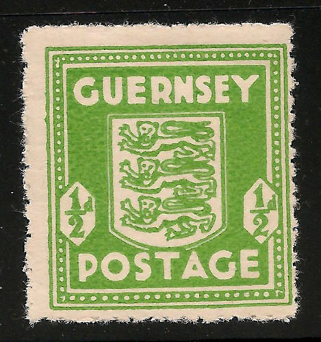
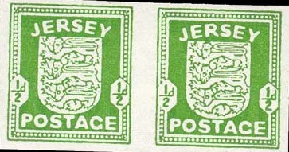
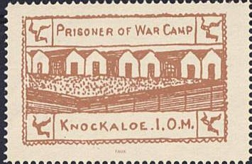

{kind=link}

Note: on my website many of the
pictures can not be seen! They are of course present in the
catalogue;
contact me if you want to purchase it.
1/2 p green 1 p red 2 1/2 p blue
Forgeries of Guernsey, the backleg of the second lion, which is
pointing inwards, has a white spot in the upper part, according
to 'Focus on Forgeries' by V.A. Tyler
Fiscal stamps of Guernsey, inscription 'REVENUE STATES OF GUERNSEY', with arms in the center:
1 p lilac and 2 p red (the 2 p stamp is smaller in size)
Stamps of Great Britain, used in Jersey:
(Reduced size)
1/2 p green 1 p red

1/2 p green 1 p red 1 1/2 p brown 2 p orange 2 1/2 p blue 3 p lilac
1 p red
This stamp was issued in 1915 in the prisoner of war camp of Knockaloe on the isle of Man. The stamps was intended to serve on letters between the different prisoner camps on the island (25.000 German prisoners were on the island). The stamps was issued and forbidden by the authorities on the same day. All stamps except a few were burnt (only the above letter, a sheet of 21 stamps in the museum of Man and 9 stamps have survived). The above letter was recently offered on Ebay (October 2003).
Another picture of a Knockaloe stamps can be found at the following website of Sandafayre: http://www.sandafayre.com/gallery/stamp_3037.htm.
Of course, forgeries exist of this rare stamp, in the next forgery, the word 'FAUX' (=forgery) has been added at the bottom of the stamp:

I have also seen this forgery without the words 'FAUX' printed at the bottom. These forgeries appear to be modern reproductions.
Stamps - Briefmarken - Timbres-poste